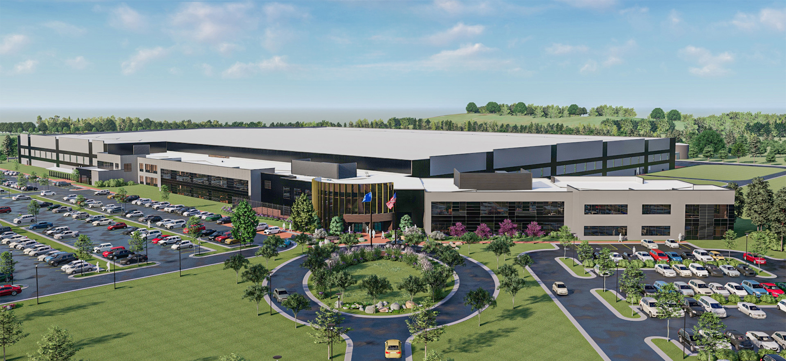
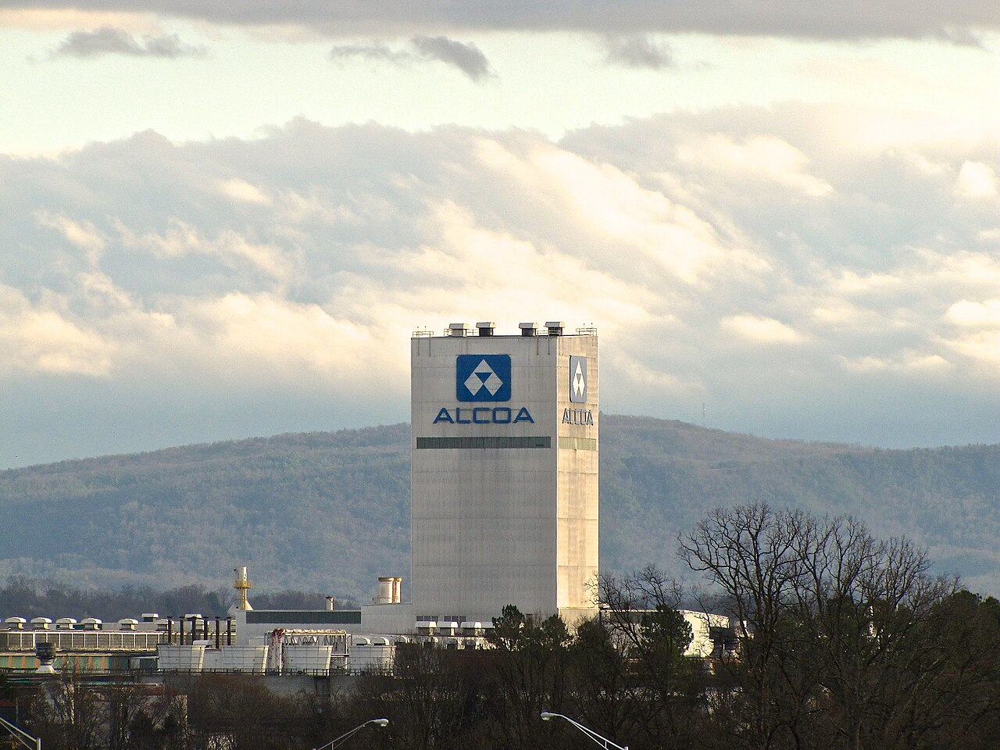
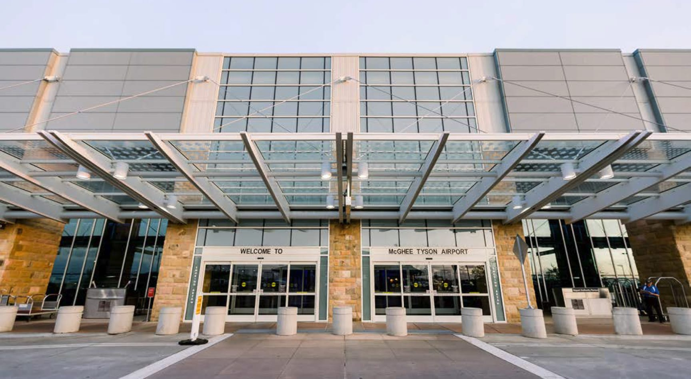
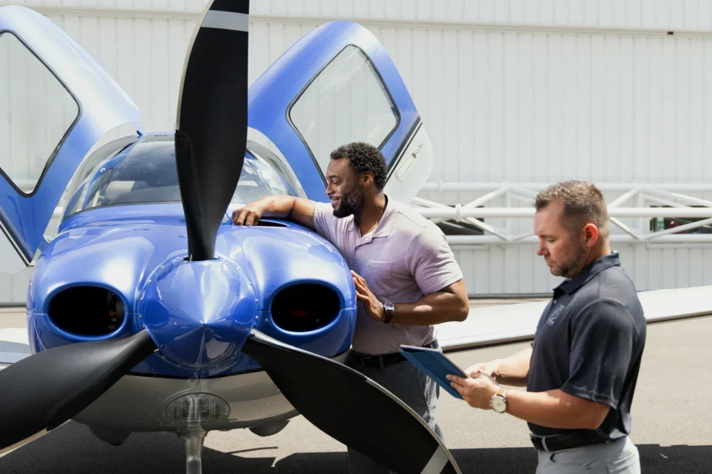

Automotive technology and manufacturing in Maryville.
Direct-book Maryville corporate lodging
A local alternative to Airbnb and Vrbo for Blount County business travel
If you are searching for corporate lodging in Maryville TN, Airbnb, AirBnB, Vrbo, VRBO, or places to stay for a work trip, this is the direct-book version: downtown units above Bella Restaurant and larger Greenway Village stays with quick routes toward Blount County's manufacturing, aviation, airport, and corporate employers.
What brings corporate travelers to Maryville?
Aviation, automotive technology, advanced manufacturing, aluminum, and airport travel
Maryville and Alcoa are not just convenient to Knoxville. The area has its own industrial backbone, airport activity, and training ecosystem.
Corporate headquarters, production, office, and warehouse campus.
Regional airport service for East Tennessee travelers.
Training, service, aircraft management, and ownership support at TYS.

DENSO Manufacturing Tennessee
Maryville lodging for DENSO training, projects, supplier visits, and longer work stays
DENSO Manufacturing Tennessee is a major automotive technology operation in Maryville and one of the area's largest employers, with thousands of associates working across advanced manufacturing, engineering, quality, logistics, and support roles. The operation is tied to vehicle systems and components used by automakers across North America, which brings vendors, contractors, trainers, auditors, engineers, candidates, and relocating families into town.
For DENSO work trips, downtown Maryville lodging gives guests something different from a highway hotel: a real apartment, restaurants nearby, coffee before the shift or meeting, and a calmer place to reset after a long manufacturing or project day.
Automotive systems and components
Engineering and production visits
Training, interviews, vendors, and relocation
Open DENSO Manufacturing Tennessee

Smith & Wesson Maryville
A headquarters and manufacturing campus that brings visitors to Maryville year-round
Smith & Wesson's Maryville move added a nationally recognized name to Blount County's manufacturing map. The campus sits on a 236-acre site and was completed with roughly 610,000 square feet of space, including Class A office areas plus production and warehouse operations.
That kind of operation does not only bring employees. It brings corporate travelers, suppliers, construction and systems vendors, training teams, interview candidates, relocation visits, and family members scouting the area. Staying downtown helps those trips feel less temporary: dinner is close, the Greenbelt is close, and the rental feels more settled than another hotel room.
Corporate headquarters
Production and warehouse campus
Vendor, relocation, and candidate travel
Open Smith & Wesson campus project

Arconic and the Alcoa legacy
Arconic carries forward the aluminum story that helped shape Alcoa and Blount County
When people search for corporate lodging near Alcoa, they are often looking for the industrial story behind the city itself. The city of Alcoa grew around aluminum manufacturing, and that plant history still matters to the region's identity, employment base, and supplier traffic.
Today, Arconic Tennessee Operations continues the aluminum-manufacturing thread in Alcoa, with work connected to rolled aluminum products, industrial customers, maintenance, engineering, plant support, contractors, and specialized visitors. For guests coming to Arconic or the broader Alcoa industrial corridor, Maryville is close enough for the workday and more enjoyable for the evening.
Aluminum manufacturing heritage
Arconic Tennessee Operations
Plant, maintenance, supplier, and engineering travel
Open Arconic Tennessee Operations

McGhee Tyson Airport
East Tennessee's regional airport is one of the biggest reasons guests choose Maryville and Alcoa
McGhee Tyson Airport in Alcoa serves East Tennessee with nonstop flights, commercial aviation, military aviation, general aviation, and a steady stream of business and leisure travel. FlyKnoxville currently describes TYS as serving 25 nonstop destinations with 6 airlines, and recent route and airline announcements, including Southwest service, have made airport convenience an even bigger part of the Maryville lodging story.
Guests often stay in Maryville or Alcoa the night before an early flight, after a late arrival, before a training event, or while meeting family flying in. Downtown Maryville keeps the airport close without making the whole stay feel like an airport layover.
Early flights and late arrivals
Southwest and airline-service growth
Business, military, general aviation, and family travel
Open McGhee Tyson Airport

Cirrus Knoxville at TYS
Pilots come to East Tennessee to train, transition, take delivery, and support Cirrus aircraft
Cirrus Knoxville is located at McGhee Tyson Airport and is built around flight training, aircraft service and support, aircraft management, and the Cirrus ownership experience. Cirrus describes the Knoxville location as a place where flight training becomes personalized, with private pilot training, transition and recurrent training, simulator work, and Vision Jet training connected to the Cirrus ecosystem.
That brings guests who need more than one night and more than one hotel room: new owners, pilots earning ratings, Vision Jet customers, instructors, maintenance visitors, spouses, and families. A downtown Maryville stay gives aviation guests room to decompress between training days, eat locally, and stay close to TYS without sleeping on the airport strip.
Private pilot and recurrent training
Vision Jet and ownership support
Maintenance, service, and aircraft management
Open Cirrus Knoxville
Which unit fits corporate lodging?
Pick compact downtown or roomier Greenway Village
The Broadway lofts are best for solo travelers and couples who want the most central downtown feel. The Greenway Village units are stronger for two colleagues, families relocating together, or longer stays that need two bedrooms and two bathrooms.
Compare all six rentalsBest for 1-2 guests
Walkable restaurants, coffee, shops, and a quick downtown reset between meetings or training days.
Best for 2-6 guests
Two-bedroom layouts, two bathrooms, sweets downstairs, Greenbelt access, and more room to spread out.
Business travel FAQ
Questions before booking a Maryville work stay
Is this a good fit for DENSO corporate lodging?
Yes. Bricks Over Broadway is in Maryville, with apartment-style corporate lodging for guests visiting DENSO Manufacturing Tennessee for projects, training, vendor meetings, or interviews.
Can I book direct instead of Airbnb or Vrbo?
Yes. Guests who find us while searching Airbnb, AirBnB, Vrbo, or VRBO can book direct through the live booking links on this site.
Which rentals work for longer stays?
Greenway Village is usually the best fit for longer corporate stays because the units have two bedrooms and two bathrooms. Broadway works well for shorter solo trips.